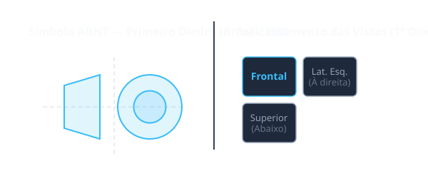

Situação de Aprendizagem 1: Definição e Normas Técnicas
1.1 O que é Desenho Técnico?
O desenho técnico é a linguagem universal da engenharia e da manutenção. Ele é uma forma de representar, com exatidão, a forma, as dimensões e as características de uma peça ou de um sistema mecânico.
Diferente do desenho artístico, que busca expressar sensações e emoções, o desenho técnico tem como objetivo principal comunicar, de maneira clara e precisa, as informações necessárias para a fabricação, inspeção e montagem de componentes.
Diferencial SENAI: Neste curso, você desenvolverá a capacidade de interpretar desenhos técnicos de acordo com as normas ABNT, garantindo precisão e segurança nos processos industriais.
1.2 Normas Técnicas (ABNT)
A ABNT (Associação Brasileira de Normas Técnicas) estabelece as diretrizes para a elaboração de desenhos técnicos no Brasil. As principais normas aplicáveis ao desenho técnico mecânico são:
| Norma ABNT | Descrição |
|---|---|
| NBR 8403 | Aplicação de linhas em desenhos - Tipos de linhas e larguras |
| NBR 10067 | Princípios gerais de representação em desenho técnico |
| NBR 10126 | Cotagem em desenho técnico |
| NBR 10273 | Representação de roscas em desenhos técnicos |
| NBR 11182 | Convenções de representação de soldas em desenhos técnicos |
1.3 Primeiro Diedro vs Terceiro Diedro
Existem dois sistemas principais de projeção ortogonal utilizados no mundo:

Importante: No Brasil, utiliza-se o Primeiro Diedro, conforme estabelecido pelas normas ABNT. Em países como os Estados Unidos, utiliza-se o Terceiro Diedro.